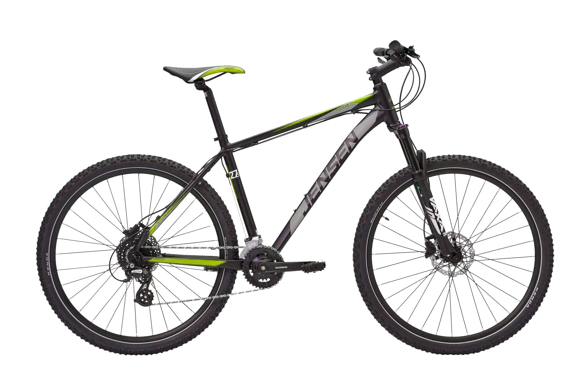
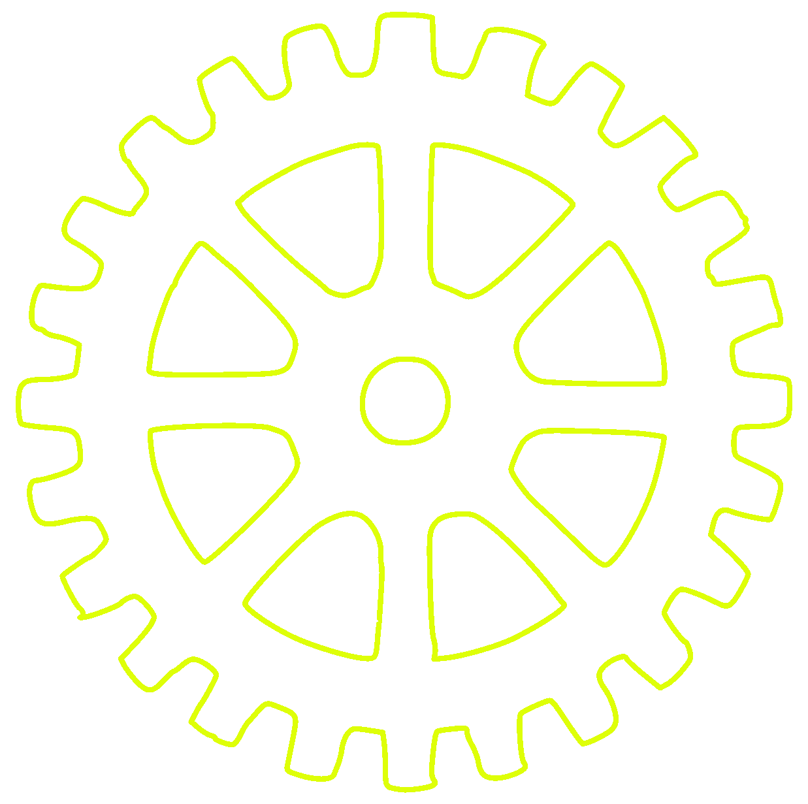
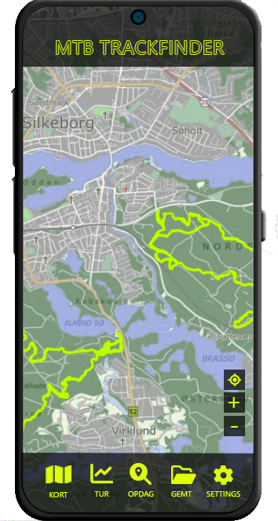

Mærk friheden
Når stien i skoven ender, så bliver det rigtigt sjovt for mountainbikeren. Mountainbikes garanterer køreglæde i nærmest enhver situation, hvad end den skal bruges i hverdagen, som turcykel eller til vilde eventyr i terrænet.
Jensen Mtbs

Vores in-house brand JENSEN er garant for super høj kvalitet. Her er vi selv herre over hvert enkelt komponent, der er monteret på de forskellige mountainbikes, og vi bygger selv alle cyklerne fra bunden. Da vi kan springe grossistleddet over, får du altså uhørt meget værdi for pengene, når du køber en MTB fra JENSEN. Vi har 4 forskellige modeller lige til dit behov og i din prisklasse.
Se alle vores modeller
HVorfor MTB?
- Du behøver næsten intet for at starte – blot et cykel og en hjelm.
- Det er en sjov, effektiv måde at dyrke motion.
- Du kan træne i din transporttid.
- Du kan konkurrere med venner, hvis I cykler sammen.
- Du kan træne hele året - selv når det regner. Medbring blot varmt tøj, når det bliver koldt.
- At køre på mountainbike frigiver endorfiner, som kan være med til at forebygge og behandle stress.

Se vores mtb guide
MTB trackfinder
